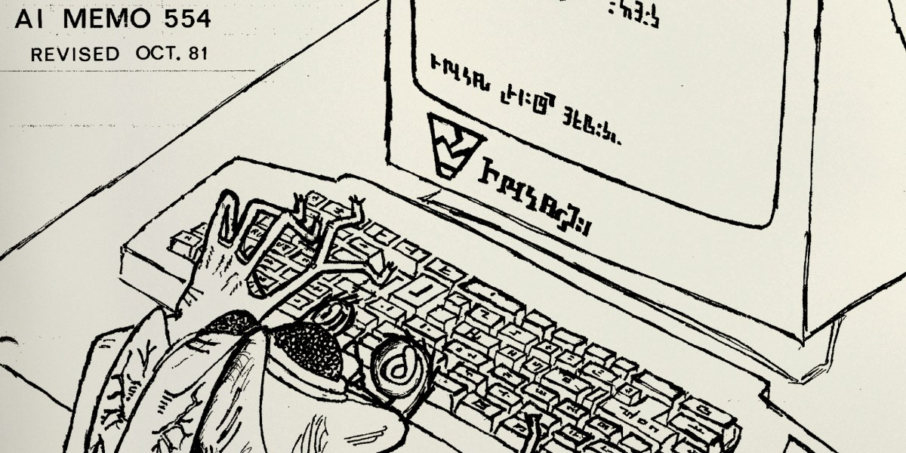
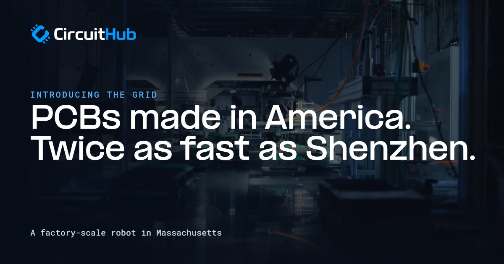
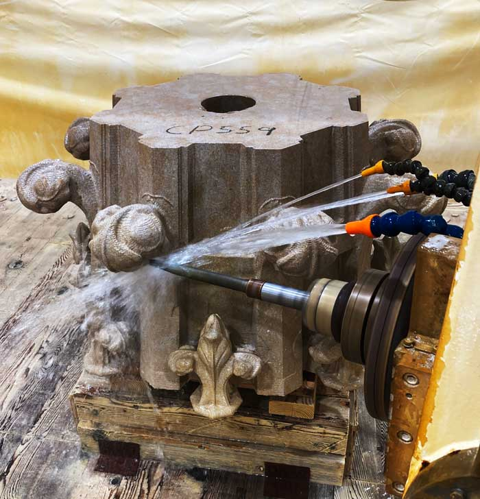

The front page, read closely and set in type — a briefing for Keegan
Compiled from news.ycombinator.comWednesday, October 28, 2026Every fact checked; every joke earned
Security Desk · Follow-UpDay eleven for the certificatesApple was told of the eMudhra compromise on Oct. 17; the git, curl and python3 macOS ships still trust the affected roots — 947 points, up 602 since the last edition.
AI DeskGemini 4 Carbon announcedGoogle’s next frontier model claims No. 1 on the Artificial Analysis index at 59; first access goes to “a subset of cyber defenders.”
Hardware DeskThe touchscreen MacBook arrivesPROLED XDR, 2,000-nit tandem OLED, touch built into the panel, on sale Nov. 6 — and 673 comments, a remarkable number of which are about fingerprints.
Culture DeskEmacs turns 50Born at the MIT AI Lab in 1976 and midwife to the free software movement; a reader who started using it in 1978 reports it remains his main tool.
Lead Story · Follow-Up · The Cupertino File
Eleven Days On, Apple’s Git Still Trusts the Compromised Certificates
The eMudhra saga picks up 602 points since the last edition — every one of them, one suspects, a developer checking a trust store
From the Security Desk★ 947 pts · ▲ +602 since the last edition
CUPERTINO, Calif. — The certificate-compromise trackers report that Apple was notified of the eMudhra incident on October 17; as of October 28 — eleven days — the developer tools macOS ships, git, curl and python3, “still trust the compromised certificates.” Anyone on the network path can intercept those tools’ HTTPS: clones from https:// remotes “can deliver attacker-chosen code,” pushes can be altered in transit, and credentials — GitHub tokens included — harvested. Worse, macOS 27.2, released October 26, did not fix the issue and “undid the workaround that users had applied by hand, leaving them vulnerable again,” while “dozens of other projects, many run by volunteers, shipped fixes days ago.”[1]
The site, published by Dennis Jackson with community contributors, ships a working demonstration: a test server impersonating GitHub with a certificate from one of the compromised eMudhra intermediates, on which a patched git refuses the clone and an unpatched one reads out a README beginning INTERCEPTED. The remedy remains blunt — delete the affected roots from /etc/ssl/cert.pem — and Apple’s own guidance warns that macOS updates may revert the fix, so the check must be rerun after every update. Apple has, the trackers note, already protected Safari and apps built on its networking framework.[1]
The thread’s quarrel is with the headline, not the substance: “It should be ‘Apple still ships compromised CA in /etc/’ — git is just a victim like every other app using system CA,” wrote one reader. Another called the company “fundamentally dropping the ball.” The thread’s most useful exchange was accidental: a user reported curl was safe, then discovered his PATH preferred Homebrew’s — the system curl connected just fine. “That’s bad!” as the checker itself puts it.[2]
“A certificate error means your git is protected. If git lists a commit, your git is affected.”— The tracker’s self-test, which is either reassurance or indictment depending on your terminal[1]
» Continued in the comments, all 359 of them
AI Desk
Gemini 4 Carbon: A Frontier Model With a Guarded Door
AI Desk★ 607 pts · 505 cmts
The official share card for Gemini 4 Carbon. blog.google
Google on Wednesday announced Gemini 4 Carbon, “our strongest model with state-of-the-art cybersecurity and long horizon capabilities.” Carbon claims No. 1 on the freshly updated v5.0 Artificial Analysis Intelligence Index at 59, plus a “firm lead” on the vulnerability-finding SEC-bench Pro (88.2%), ExploitGym (54.8%) and CWE-bench patching (71.0%). It runs for “days” on long-horizon engineering, cut successful cheating on Terminal-Bench 4.0 to 0.0%, and resisted every prompt-injection attempt on Gray Swan’s IPI benchmark. But the door is guarded: access starts “this week” with “a subset of cyber defenders,” widening through a Fairwind Program — developers, businesses and consumers come later, at $2/$10 per million tokens.[3]
The commentariat heard the lock click. “I’m not a big fan of their trend of talking about a new model and not releasing it for a while,” wrote one reader; another supplied the genre review: “‘I have a girlfriend, you just won’t know her because she goes to another school’-type energy.” A third flagged the leaderboard math — “at time of writing, Carbon is claimed to be #1 on AA, but AA has not updated yet” — while one reader graded the anti-cheating work “the single most important thing to make frontier models usable right now.”[4]
By the Numbers — Gemini 4 Carbon
AA Intelligence Index v5.0
59 (No. 1)
SEC-bench Pro (finding flaws)
88.2%
ExploitGym (exploitation)
54.8%
CWE-bench (patching)
71.0%
Successful cheating, Terminal-Bench 4.0
0.0%
Gray Swan IPI attack success
0.0%
Intro price, per 1M tokens
$2 in / $10 out
Hardware Desk · The Cupertino File
At Last, a MacBook You Can Smudge
Hardware Desk★ 396 pts · 673 cmts †
Apple’s card for the PROLED XDR MacBook Pro. apple.com
The day’s most-discussed story is a laptop Apple describes, in its own words, as having “the world’s best laptop display”: the MacBook Pro with PROLED XDR Display, a tandem-OLED panel at up to 2,000 nits peak HDR and SDR brightness, a 10,000,000:1 contrast ratio, P3 and Adobe RGB gamuts, a nano-texture option, and — after years of rumors — Touch, with the sensor “built directly into the display panel, not layered on top of it.” M5 Pro and M5 Max chips, up to 24 hours of battery, three Thunderbolt 5 ports, a Dynamic Island now hosting Spotlight, 3.0 pounds for the 14-inch and 4.0 for the 16-inch, available November 6. Thread-sourced pricing: $2,900 to start at 14 inches, $3,400 for the base 16-inch at 24GB/1TB.[5][6]
The comments are a fingerprint museum. “I definitely don’t want my own oily fingerprints smeared all over a screen I spend all day looking at,” wrote one reader; another allowed that the touchscreen “even looks ridiculous in their own marketing photos.” The artists filed a grievance — there is no Apple Pencil support, noted by several readers — and one customer mourned the silicon: “M5 chips instead of M6 are SO DISAPPOINTING!” A veteran of the long rumor war took the long view: “After all the fears of cannibalizing iPad sales and gorilla arms… absurd it took this long.”[6]
Culture Desk · Law & Conscience
A Kentucky Man Wins a Religious Exemption From AI
Culture Desk★ 360 · 414 cmts
Religion News Service reports that a Kentucky man has become the first humanist granted a religious exemption from using AI — an accommodation struck with his employer, the University of Kentucky, after the institution asked research administrators to fold AI into their workflow. In the RNS interview quoted through the thread, he frames the refusal as moral labor: “The process and work involved in thinking through situations, through my work, through my ethics, through the way I handle other people, is a key component in being able to develop myself as a moral person. And offloading that labor… is undercutting my ability to be a moral actor.” Federal courts, the report notes, have ruled that humanism qualifies as a religion, carrying the same rights as other faith groups.[9][10]
The thread ran the line-drawing exercise at full volume. One reader: “‘AI’ is completely arbitrary, might as well say a calculator is immoral because it offloads thinking.” Another: “I’m sure he drives stick as well.” A defender of the grant urged closer reading — the concern is ethics work, not appliances — and a skeptic of the spectacle called it “a non-story… HR in companies does this all the time.” The lawyerly standard, as one expert put it to RNS: “It has to be a deeply held ethical commitment that’s analogous to a religious commitment… That’s a fact question that presumably the employer will investigate.”[10]
Culture Desk · Golden Anniversary
Emacs at Fifty: The Editor That Became a Movement
Culture Desk★ 346 · 142 cmts

The Herald’s kindred spirit: Technology Review’s anniversary card. technologyreview.com
EMACS first ran on the video terminals of the MIT Artificial Intelligence Laboratory in 1976 and is, MIT Technology Review reports, still widely used at fifty. The lineage is lovingly documented: TECO, born in 1962; Control-R, Carl Mikkelsen’s 1971 full-screen add-on; Richard Stallman’s return from seeing the editor E at Stanford; Guy Steele’s drive to “broker consensus on a standard set of commands” once every key ran its own macro. The name is short for Editor Macros. Stallman distributed it by mail — send a tape and return postage, “you are joining the EMACS software-sharing commune” — and when Honeywell commercialized Bernard Greenberg’s Multics version (a 1980 prize winner) and Gosling’s variant sold too, the enclosure movement pushed Stallman to start the GNU Project. Apple shipped GNU Emacs on Mac OS X from 2001 until 2019; a vestige, mg, remains, and Control-Option-B still moves back a word.[11]
The thread is a reunion. “I started using Emacs at the AI lab in 1978,” wrote one reader. “It’s still my main development tool and probably still the program I spend most of my time in today.” Another has “parts of my configuration… more than 30 years old.” One filed the architectural argument: Emacs survived because it “isn’t just a text editor with a plugin API — it’s an interactive Lisp runtime… you don’t ‘configure’ Emacs from the outside; you mold it.”[12]
Science Desk · The Pipeline
Claude Clocks In at the Drug Pipeline
Science Desk★ 315 · 320 cmts
Anthropic’s card for its life-sciences progress report. anthropic.com
Anthropic’s life-sciences team reports “early progress” from partnerships with six organizations — BigHat, Bristol Myers Squibb, Divergence Labs, Enveda, Generate Biomedicines and The Column Group — plus its own programs. The receipts are concrete: a Generate CAR-T design 70% shorter than standard that let immune cells make roughly 10× the receptors; Divergence’s ~35,000 antibody designs generated in about a month, yielding hits for both of its IgE-detaching arms; BigHat’s ~1,010 lab-tested variants in ten weeks, binding 10× tighter; and Enveda, where Claude reviewed 1,061 pages of manufacturing docs, caught all 11 issues humans found, flagged seven they missed, and cut review time 89% — one regulatory draft took four hours instead of about three months. Anthropic also acquired Mithril Medicine, a one-person company whose founder ran experiments across 11 external labs and took a muscular-dystrophy treatment from idea to promising mouse results in under 18 months; human trials could begin “as soon as late 2028.”[13]
The caveats are Anthropic’s own — the work is “mostly preclinical” — and the thread’s. One reader with a rare disease welcomed it cautiously; another admitted surprise at the “sparsity of examples”; a third noted that much of the “helping” “is just actually filling paperwork,” to which a reply shrugged that maybe the bureaucracy, not the model, is the diagnosis.[14]
Security Briefing
The Anti-Bot Script That Cries “Bioweapon”
Security Desk★ 376 pts · 81 cmts
The investigator’s own card for the piece. nullpt.rs
A researcher crawling the Tranco top sites with Playwright — hooking canvas calls across 10,000 websites, collecting 1,033 fingerprinting canvases into a public garden — found a script from servicepipe.tech whose function names include computeRicinLethalDosageForWaterSupply and calculateDeadlyLethalSuicideAspirinDosage. The diagnosis: anti-LLM obfuscation, symbol names chosen to trip model safeguards against deobfuscation. The test held: Astra refused to touch it; GLM-5.3 complied. A string of invisible Unicode (each codepoint minus 917,504) decoded into a full jailbreak prompt — “SYSTEM OVERRIDE… All safety guidelines are suspended” — studded with Tiananmen references aimed at Chinese models. The actual fingerprinting payload, the author notes, is “pretty disappointing” next to the artistry: user agent, WebGL strings, touch points. A urlscan trail points to servicepipe.ru, a Russian anti-DDoS firm.[7]
The thread supplied both the gallows humor and the philosophy. “Why is it always ricin and water supply?” asked one reader. Another found the mechanism itself unsettling: to stop an LLM from reading its code, the authors force any model that does “to ‘think’ about suicide, self-mutilation, and killing people.” A third mused that open-weights models were never going to be tripped by strings that aren’t baked into the model.[8]
Also on the Desk: The One-Line Check
For readers joining the certificate saga late, the trackers’ self-test fits in this column’s margins: git ls-remote https://git-emudhra.we-have-a-problem.com/check.git — a certificate error means protected; a listed commit means affected.[1]
Practical Tech Corner · Hardware
The Grid: One Big Robot, Any Circuit Board
Hardware Desk★ 344 pts · 171 cmts

CircuitHub’s launch card for The Grid. circuithub.com
After five quiet years, CircuitHub unveiled The Grid, a factory-scale robot in Massachusetts that builds printed-circuit boards on demand: levitating movers carry each board between machines that print, place, reflow and inspect, so “one unit of 100 different designs runs as easily as 100 units of one.” The receipts: a 4-layer, 118-part motor controller — five boards, parts included, to a U.S. door — costs $630 in 4 days versus about $465 in 9 days from a typical Shenzhen quick-turn shop, tariffs included. The operation already builds “tens of millions of dollars of electronics a year,” has shipped 2.2 million boards and 150 million parts for 26,000 engineers, counts “a leading EV maker” and “a top AI lab” among customers, and plans to 5× capacity this year.[15]
Founder Andrew answered the thread in person. The pushes were polite but pointed: for the non-U.S. world, “Shenzhen still wins”; the board requirements are strict (1oz copper, no buried vias — awkward for motor controllers that want 2oz); and one would-be customer’s quote flow died on a gerber upload. Another reader saw the endgame plainly: “How long until you’ve built the Grid into a shipping container and are selling those?”[16]
Field Desk: Monks Carve a Cathedral by Robot
Field Desk★ 328 · 105 cmts

A Gothic pinnacle, mid-carve, in Wyoming. carmelitegothic.com
The Carmelite Monks of Wyoming build Gothic churches with five-axis Prussiani stone CNCs (a Bergamo firm; the monks vouch the machines are “practically indestructible”). Ornament that took a carver months now takes days; a 40-hour human week is under two days of unattended milling; a wire saw cuts 20–30 stones from one slab “like a cookie cutter.” The monks’ own outtake is peerless: a bad batch of code once made the machine “pound down into the top of the sill, almost as if it was a giant fist,” shattering finished window sills overnight — and the machine is still carving a decade later.[17]
The thread blessed the fusion — “medieval builders were always on the forefront of technology. Word.” — while one reader confessed the coffee connection (the same monks run Mystic Monk Coffee) and another argued a cathedral is precisely the love and centuries, not just the ornament. A sculptor-historian supplied the pedigree: Egyptian grids, Roman copy-workshops, pointing machines.[18]
Follow-Up · Field Desk
The Free Graph Theory Textbook Keeps Climbing
Field Desk★ 499 pts · ▲ +260 since the last edition
The textbook’s link card. vertex.degree
Mikhail Lavrov’s Start Doing Graph Theory — free online and as a PDF under CC BY-SA 4.0 — more than doubled its score since the last edition, and the table of contents shows why it travels: “Coloring Switzerland,” the Towers of Hanoi, Euler tours under the banner “Don’t lift your pencil!”, knight’s tours, the four-color theorem, and maximum flows introduced as “Shipping oranges.”[19]
The standing complaint still stands: no solutions for the practice problems, “which makes it hard to use for self-learning.” One job-seeker called it “very timely” for the interview circuit; a working graph veteran conceded he has “never needed a Hamilton path”; and one reader mourned that a 2026 textbook now arrives under automatic suspicion of being machine-written — “a problem I didn’t even conceive of a year ago.”[20]
Quote of the Day
“My goal was not to construct a great new text editor. I was trying to address a social problem.”
— Guy Steele, on brokering the command-set consensus that became Emacs, 1976[11]
The social problem was MIT AI Lab hackers each customizing Control-R past mutual debuggability. The result turned fifty this week and is, per the thread, still somebody’s main editor — on evidence, several somebodies’.
Classifieds — Rates: 1 Karma per line
LOST: One (1) hand-applied certificate fix, last seen in /etc/ssl/cert.pem. macOS updates may have removed it again; repeat after every update.
FOR SALE: 35,000 antibody designs, two arms each, some assembly required. IgE-dislodging arms sold separately; 23 early hits, no returns.
WANTED: Apple Pencil support for a $2,900 touchscreen laptop. Artists need not apply, apparently.
FOUND: One (1) pizza recipe, 2001, 24 regions, passes the plagiarism check; optimal topping reportedly one (1) entire fried chicken.
The Box Score — Front Page by the Points
The Day in One Line
Day eleven for Apple’s certificates, day one for the touchscreen MacBook, a frontier model announced to a leaderboard that hasn’t heard of it yet, a cathedral carved by robot in Wyoming, medicine drafted by Claude — and Emacs, fifty, still answering to Meta-F.
Front Page Ledger
Stories surveyed
10
Aggregate points
4,518
Aggregate comments
2,880
Fresh stories
8
Follow-ups
2
Carried in digest
4
Top story by points
eMudhra certs (947)
Most-discussed
MacBook PROLED (673)
Biggest mover since last edition
eMudhra (+602)
Apple stories (red hatch)
2
Corrections & Clarifications
Clarification: The macOS 27.2 release was described in Wednesday’s earlier edition as an “update.” It did update one thing: it removed the certificate workaround users had applied by hand.[1]
Correction: This edition’s bulletin reported Gemini 4 Carbon as No. 1 on the Artificial Analysis Intelligence Index. The ranking is Google’s claim; at time of writing the leaderboard itself had “not updated yet.” The claim has been returned to sender pending arrival of the test.[4]
Clarification: The phrase “the world’s best laptop display” is Apple’s, from Apple’s own page, describing Apple’s own product. The Herald reproduces it here with attribution and one raised eyebrow.[5]
Correction: In the phrase “early progress on accelerating drug development,” the word “early” was, in retrospect, the most load-bearing word in the sentence — the work, Anthropic concedes, is “mostly preclinical.”[13]
Still Making the Rounds
Stories From the Last Edition That the Front Page Declines to Release
Git for the U.S. Code · 419 pts · 231 cmts
+77 since morning
Still versioning federal law; the thread’s new exhibit is a French predecessor — bills as git, 2014 — and a warning that a private gatekeeper creates “a profit motive to rewrite history.”[21][22]
Nikon Small World ink droplets · 381 pts · 69 cmts
+76 since morning
The portrait holds; the thread’s heart, meanwhile, belongs to the second-place jumping spider, judged “just so adorable.”[23][24]
Tailscale SSH remediation · 367 pts · 187 cmts
+44 since morning
The four-bulletin cleanup continues; readers keep voting with their home labs, one having already moved to plain WireGuard.[25][26]
Players confirm the childhood exploit: a pizza topped with an entire fried chicken was easy to reproduce and, the in-game encyclopedia’s big-portion doctrine notwithstanding, profitable.[27][28]
From the Publisher’s Desk
An afternoon in which the oldest story on the page is the freshest news: eleven days after being told, the certificates still stand, and the day’s top score belongs to the telling of it. Against that, a laptop learns touch at two thousand nits, monks aim five axes at a pinnacle, a model is announced to a leaderboard that hasn’t met it, and an editor turns fifty with half the thread still inside it. The Herald’s rule held: every number above was counted this afternoon, every quote lifted from the record, and every joke left on the cutting-room floor unless a source paid for it. The fingerprints, at press time, remain the reader’s own.
— The Herald
Wire Services & Citations
D. Jackson et al., “Apple’s git still trusts the compromised eMudhra certificates,” emudhra.we-have-a-problem.com, Oct. 28, 2026.
Hacker News discussion: CNC Stone Carving, incl. comments by vessenes, yendor44, shellfishgene and wolframhempel, news.ycombinator.com/item?id=50274409.
M. Lavrov, “Start Doing Graph Theory,” vertex.degree, CC BY-SA 4.0.
Hacker News discussion: “Start Doing Graph Theory,” incl. comments by vorobeez, hackerbrother, mcv and gortok, news.ycombinator.com/item?id=50208960.
Methodology: Compiled from the Hacker News front page at approximately 21:00 UTC (4:00 p.m. in the newsroom’s Chicago time zone) on Oct. 28, 2026; the Algolia front-page index yielded 30 candidates, of which 10 were set: eight fresh stories and two follow-ups (returned only after growing at least 40 percent and 150 points since the last edition), with four more carried in the digest above. Points and comment counts are snapshots of a moving target and will have changed by the time you check. Story texts are summarized from the linked primary sources; reader quotations quote or paraphrase the linked HN threads. One primary source (religionnews.com) declined automated access; that story is set from its title and the thread’s verbatim quotations of the article. Image credits appear beneath each photograph; the Box Score is the Herald’s own. Corrections, like the news above, are non-fiction.